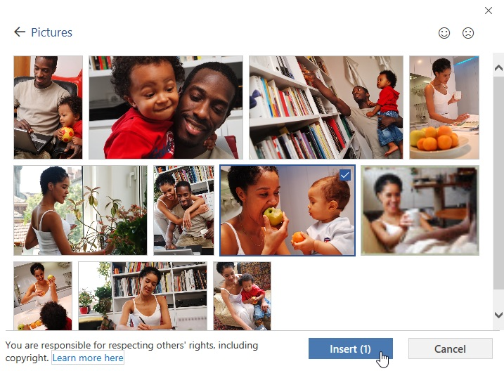
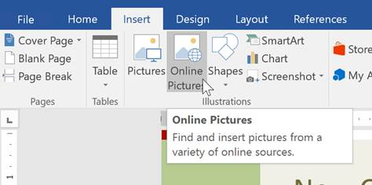

Gambar dan Pembungkus Teks (Pictures and Text Wrapping)
Menambahkan gambar ke dokumen Anda bisa menjadi cara yang bagus untuk mengilustrasikan informasi penting dan menambahkan aksen dekoratif ke teks yang ada. Digunakan dalam jumlah sedang, gambar dapat meningkatkan tampilan keseluruhan dokumen Anda.
Untuk menyisipkan gambar dari file:
Jika Anda memiliki gambar tertentu, Anda dapat menyisipkan gambar dari file. Dalam contoh kita, kita akan menyisipkan gambar yang disimpan secara lokal di komputer kita. Jika Anda ingin bekerja dengan contoh kami, klik kanan gambar di bawah dan simpan ke komputer Anda.

Tempatkan titik penyisipan di mana Anda ingin gambar muncul.

Pilih tab Insert pada Ribbon, lalu klik perintah Pictures.

Kotak dialog Sisipkan Gambar akan muncul. Arahkan ke folder tempat gambar Anda berada, lalu pilih gambar dan klik Sisipkan.

Gambar akan muncul di dokumen.

Untuk mengubah ukuran gambar, klik dan seret salah satu tuas pengatur ukuran sudut. Gambar akan berubah ukuran sambil menjaga proporsi yang sama. Jika Anda ingin meregangkannya secara horizontal atau vertikal, Anda dapat menggunakan pegangan ukuran samping .

Mengubah pengaturan pembungkusan teks
Saat Anda menyisipkan gambar dari file, Anda mungkin memperhatikan bahwa sulit untuk memindahkannya tepat di tempat yang Anda inginkan. Ini karena pembungkusan teks untuk gambar diatur ke In Line with Text. Anda harus mengubah pengaturan pembungkusan teks jika Anda ingin memindahkan gambar dengan bebas, atau jika Anda hanya ingin teks membungkus gambar dengan cara yang lebih alami.
Untuk membungkus teks di sekitar gambar:
Pilih gambar yang ingin Anda bungkus teksnya. The Format tab akan muncul di sisi kanan Ribbon.

Pada tab Format, klik perintah Bungkus Teks di grup Susun, lalu pilih opsi pembungkusan teks yang diinginkan. Dalam contoh kita, kita akan memilih In Front of Text sehingga kita dapat dengan bebas memindahkannya tanpa mempengaruhi teks.
Anda juga dapat memilih Opsi Tata Letak Lainnya untuk menyempurnakan tata letak.

Teks akan membungkus gambar. Anda sekarang dapat memindahkan gambar jika Anda mau. Cukup klik dan seret ke lokasi yang diinginkan. Saat Anda memindahkannya, panduan perataan akan muncul untuk membantu Anda menyelaraskan gambar di halaman.

Anda juga dapat mengakses opsi pembungkusan teks dengan memilih gambar dan mengklik tombol Opsi Tata Letak yang muncul.

Jika panduan perataan tidak muncul, pilih tab Page Layout, lalu klik perintah Align. Pilih Use Alignment Guides dari menu drop-down yang muncul.

Menggunakan pengaturan pembungkusan teks yang telah ditentukan sebelumnya
Pembungkusan teks yang telah ditentukan sebelumnya memungkinkan Anda memindahkan gambar dengan cepat ke lokasi tertentu di halaman. Teks akan secara otomatis membungkus objek sehingga tetap mudah dibaca.

Memasukkan gambar online
Jika Anda tidak memiliki gambar yang diinginkan di komputer, Anda dapat menemukan gambar secara online untuk ditambahkan ke dokumen Anda. Word menawarkan dua opsi untuk menemukan gambar online:
Pencarian Gambar Bing : Anda dapat menggunakan opsi ini untuk mencari gambar di Internet. Secara default, Bing hanya menampilkan gambar yang dilisensikan di bawah Creative Commons, yang berarti Anda dapat menggunakannya untuk proyek Anda sendiri. Namun, Anda harus mengeklik tautan ke situs web gambar untuk melihat apakah ada batasan tentang cara penggunaannya.

OneDrive : Anda dapat menyisipkan gambar yang disimpan di OneDrive Anda. Anda juga dapat menautkan akun online lainnya dengan akun Microsoft Anda, termasuk Facebook dan Flickr.

Untuk menyisipkan gambar online:
Tempatkan titik penyisipan di mana Anda ingin gambar muncul.

Pilih tab Sisipkan, lalu klik perintah Gambar Online.

Kotak dialog Sisipkan Gambar akan muncul.
Pilih Pencarian Gambar Bing atau OneDrive Anda. Dalam contoh kita, kita akan menggunakan Pencarian Gambar Bing.

Tekan tombol Enter. Hasil pencarian Anda akan muncul di dalam kotak.
Pilih gambar yang diinginkan, lalu klik Sisipkan.

Gambar akan muncul di dokumen.

Saat menambahkan gambar, video, atau musik ke proyek Anda sendiri, penting untuk memastikan Anda memiliki hak hukum untuk menggunakannya. Sebagian besar barang yang Anda beli atau unduh secara online dilindungi oleh hak cipta, yang berarti Anda mungkin tidak diizinkan untuk menggunakannya. Untuk informasi lebih lanjut, tinjau pelajaran Hak Cipta dan Penggunaan Wajar kami.
Tantangan!
Buka dokumen latihan kami dan gulir ke halaman 3.
Ubah pembungkus teks gambar anjing menjadi Kotak.
Seret gambar ke sisi kanan paragraf bawah.
Tempatkan titik penyisipan Anda di sebelah judul Pengingat Komunitas.
Gunakan perintah Gambar Online dan ketik kata Daur Ulang ke dalam pencarian.
Sisipkan simbol daur ulang.
Jika perlu, gunakan gagang pengatur ukuran sudut untuk mengubah ukuran simbol daur ulang sehingga semuanya pas di halaman 3.
Ubah pembungkus teks menjadi Kotak dan seret simbol ke sisi kanan poin pertama.
Setelah selesai, halaman 3 akan terlihat seperti ini:

Memformat Gambar (Formatting Pictures)
Bentuk (Shapes)
Kotak Teks (Text Boxes)
Menyelaraskan, Mengurutkan, dan Mengelompokkan Objek Aligning, Ordering, and Grouping Objects)
Tabel (Tables)
Charts